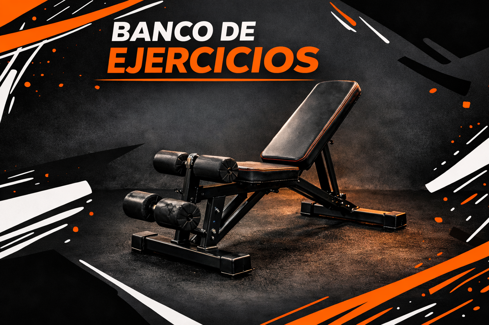

Productos
banco de ejercicios
Entrenamiento versátil
Usalo como banco plano, inclinado o multiangular para trabajar diferentes grupos musculares.
Ajustable
Su respaldo permite variar entre 11 ángulos posibles, y su asiento entre 3, para realizar ejercicios desde distintas perspectivas.
Soporte para piernas
Perfecto para entrenar cuádriceps y femorales, con opción de agregarle discos de peso.
Seguridad y estabilidad
Diseño de doble triángulo y estructura reforzada para un entrenamiento seguro.
bicicleta spinning
150 kg de carga máxima
Ideal para usuarios de distintos niveles.
Sistema de transmisión por correa
Que asegura un pedaleo silencioso y suave.
Volante de inercia
Brinda una resistencia progresiva que simula entrenamientos reales de gimnasio.
Monitor multifunción
que muestra tiempo, distancia, calorías y velocidad, permitiendo controlar tu progreso en cada sesión.

mancuernas
Discos de PVC rellenos de concreto y munición
resistentes a golpes, no rayan el piso y ofrecen gran durabilidad.
Manijas ergonómicas
permiten usar los discos como mancuernas individuales o para ampliar la variedad de ejercicios.
Mancuerna hueca reforzada
caño pintado con epoxi que asegura máxima vida útil.
Topes firmes
mantienen los discos estables durante todo el entrenamiento.
cinta de correr
Motor de corriente alterna
El motor AC de 3.0 CHP está diseñado para soportar horas de uso intensivo sin perder rendimiento ni recalentarse.
Inclinacion electrica
Con inclinación eléctrica de 3° a +15 niveles, podés simular recorridos reales desde descensos controlados hasta subidas desafiante.
Tecnologia integrada y diseño elegante
La pantalla LED de alta definición muestra datos de velocidad, distancia, tiempo.
Amortiguación y retorno energético
La superficie amplia protege tobillos y rodillas al absorber impactos, mientras ofrece la firmeza necesaria para un empuje dinámico.
maquina smith
Trayectoria innclinada
Permite ejecutar los ejercicios siguiendo una línea de movimiento más cercana a la trayectoria que haría el cuerpo sin asistencia.
Estructura de acero de alto espesor
Construida con acero estructural, esta máquina resiste rutinas intensas sin deformaciones ni vibraciones.
Optimizacion del espacio
Incorpora seis soportes integrados para almacenamiento de discos, lo que mejora la organización del área de trabajo y elimina la necesidad de racks adicionales.
Entrenamiento controlado
La máquina smith se adapta a diferentes morfologías, niveles de experiencia y objetivo.
power rack
Medidas técnicas y diseño optimizado
Cuenta con una altura total de 2.26 metros, un ancho externo de 1.74 m, y una profundidad de 1.31 m.
Poleas de doble stack
Incluye poleas laterales con stacks de 80 kg por lado.
Versatilidad total
El diseño modular está preparado para ejecutar rutinas de fuerza estructura.
Construcción reforzada
La estructura principal está construida en acero estructural de 60 por 60 mm con espesor de 2.5 mm, una medida estándar en equipamiento profesional.